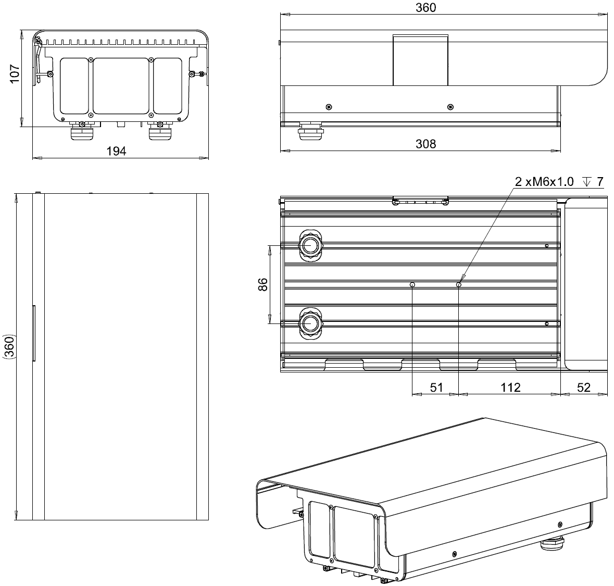

ANPR Camera 4 – Datasheet¶
Version EN 4.0.2 released on Oct 23, 2020.

NeuroCar ANPR Camera – Model 4 is a universal system designed to detect and identify vehicles based on video analysis. The camera processes the video stream, automatically detects each vehicle and identifies it by license plate recognition (ANPR). Additionally, the vehicle class, manufacturer, model version and colour are also recognized. The camera can operate indoors and outdoors, 24/7 (day-night), in extreme weather conditions without external light sources. Thanks to its low power consumption and low power supply voltage, the device can operate on batteries.
Functions¶
Function name |
Availability |
Description |
|---|---|---|
Vehicle detection |
standard |
> 98%, for vehicle speed in the range 0÷250 km/h, based on the video stream (free flow), the licence plate must be visible and legible |
Vehicle detection without plate |
option |
> 99%, for vehicle speed in the range of 0÷250 km/h, based on the video stream |
Detection of dangerous goods |
option |
> 90%, ADR plates, “Odpady”, “A” |
Detection of direction |
standard |
> 99%, vehicle reverses = -1, vehicle approaches = 1, unknown direction = 0 |
Stop detection |
standard |
yes, multiple recognition filter (stop-and-go) |
Number of lanes |
standard |
1÷3 - recognition for 3 lanes only if the camera is placed above the centre lane |
Lane detection |
standard |
yes |
Number plate recognition |
standard |
> 97% for all detected vehicles with a human-readable registration number, region selection: |
Country of origin recognition |
option |
> 97% for all vehicles with a recognised registration number, 48 countries simultaneously (including entire Europe) |
Vehicle classification (AVC) |
option |
> 92%, classes: car (7), van (11), truck (3), bus (5), motorcycle (10); for front view only, additional IR illuminator required in case of insufficient lighting (e.g. at night) |
Maker recognition |
option |
> 90%, recognition of makers such as “bmw”, “audi”, etc.; only for frontal detection; additional IR illuminator required at night |
Model recognition |
option |
> 80%, recognition of make and models such as “bmw 5”, “audi Q5”; only for frontal detection; additional IR illuminator required at night |
Speed measurement |
option |
±10% accuracy for all vehicles with recognised number plates, after automatic calibration |
Attention
All quality parameters are given as maximum values and are determined for optimum location and configuration of the unit (see Mounting instructions).
Hardware¶
Option |
A |
B |
|---|---|---|
Reference |
|
|
Image size |
3.2M px |
5M px |
Sensor |
CMOS |
|
Global shutter |
yes |
|
Sensor |
SONY IMX265LQR |
SONY IMX264LQR |
Sensor size |
1/1.8” |
2/3” |
Resolution (max.) |
2048×1536 |
2448×2048 |
Frequency (max.) |
25 fps |
15 fps |
Day-night function |
yes (mechanically switching IR filter) |
|
Lens |
embedded |
|
Focal length |
11÷40 mm (remote control) |
|
Aperture |
F/1.4 ÷ F/16 (remote control) |
|
Lens sharpness |
remote control |
|
IR correction |
yes |
|
IR illuminator |
built-in, 850nm flash, 6 LEDs, 20° or 40° |
|
Processor |
Intel® ATOM™ E3845, 64-bit quad-core x86, 1.91GHz |
|
RAM |
4G-Byte DDR3L-1333 |
|
Main storage |
64G-Byte eMMC |
|
Auxiliary storage |
SDHC/SDXC card, up to 128GB (exchangeable) |
|
Hardware encryption |
option (TPM 1.2) |
|
Ethernet interface |
1×100M/1000M RJ45 port by Intel® I210 controller |
|
Serial interface |
1×RS232, 1×RS485 |
|
GPIO interface |
2×programmable IO port, available as input or output (5V-TTL) |
|
IR Interface |
1×input, 1×output to control IR illuminator or relay, load for 100mA/50V |
|
Clock |
built-in, controlled by NTP and/or GPS |
|
Watchdog |
built-in, 1 to 256 s |
|
GPS |
option (with PPS) |
|
WiFi |
option (interchangeable with 3G/LTE module) |
|
3G, 4G, LTE modem |
optional (interchangeable with the WiFi module) |
|
Power supply |
24VDC ±10% |
|
Energy consumption (max.) |
50 W |
|
Dimensions (W×H×L) |
194×117×360 mm |
|
Weight |
3 kg |
|
Operating temperature |
-40°C ÷ +65°C |
|
Protection against water and dust |
IP66 (option IP67 - additional sealing required) |
|
Compatibility |
CE |
|
Software¶
Element |
Description |
|---|---|
Firmware |
NeuroCar Terminal VI (Vehicle Identification) [2] |
Version |
4.0 |
GUI |
yes, WEB browser (HTML5) |
API |
yes, REST |
Encryption |
yes, SSL (HTTPs) |
Authentication |
HTTP: basic, digest, token |
Data formats |
JSON, JPG, TAR |
Alerts |
yes, vehicles selected on the basis of their characteristics |
Notifications |
|
Accessories¶
{kind=link}
Pole mount bracket, with two degrees of freedom to position the camera. Made of powder-coated aluminum, with holes to allow for proper routing of power cables – optional.
—
Dimensions¶
References¶
- 1
NeuroCar. Neurocar documentation catalogue. March 2020. URL: https://docs.neurocar.pl/pro/ncar-doc-catalog/.
- 2
NeuroCar. Terminal vehicle identification 4 - data sheet. March 2020. URL: https://docs.neurocar.pl/pro/ncar-t-vi-4-info/.
Changelog¶
4.0.2 2020-04-12
Enhancement of certain descriptions
Better PDF formatting of the document
4.0.1 2020-03-08
Additional information on accessories
4.0.0 2020-03-01
Document initiation
See also¶
More information about NeuroCar products can be found at https://www.neurocar.pl or in the NeuroCar Electronic Product Catalogue [1].